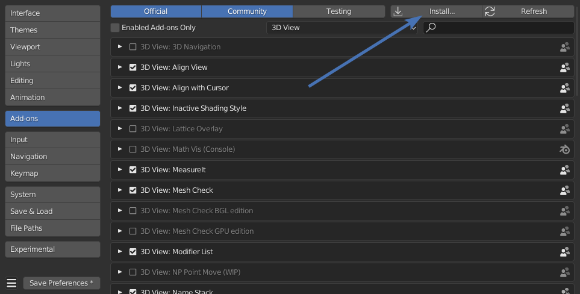
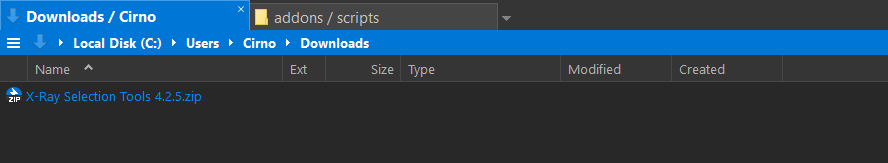
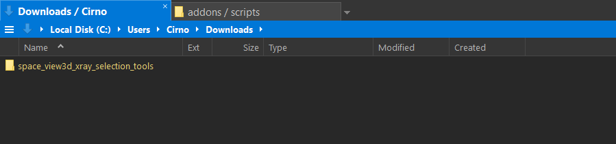
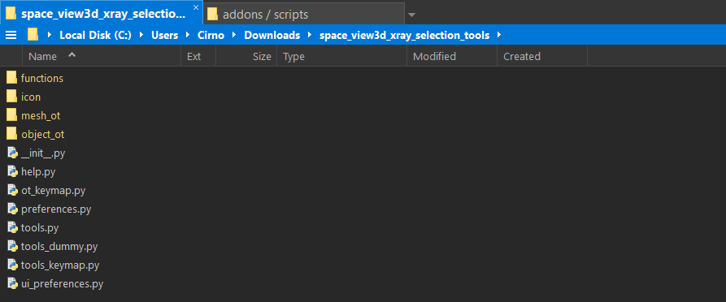
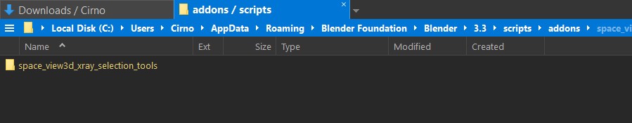
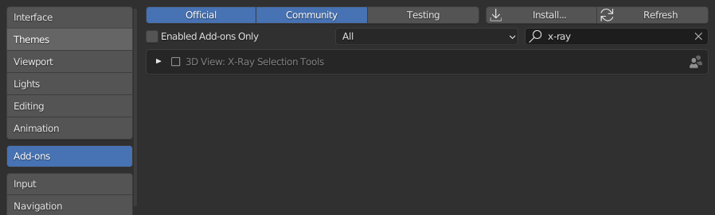
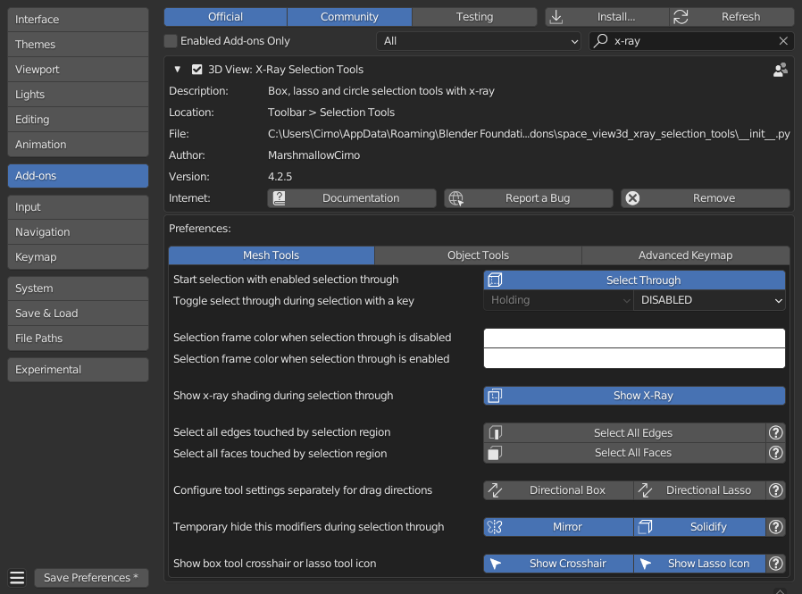

Requirements
- Windows, MacOS or Linux
- Blender 3.3
How to install
There are two ways to install X-Ray Selection Tools
From inside Blender
This approach is a bit more convenient, but if you update from an older version of the addon, it leads to a loss of previously saved addon preferences.
 installation from the Addons tab of Blender's preferences, by selecting the addon's .zip file
Using the System's File Browser
The approach is recommended, especially if you update from an older version to a newer one, as all previous addon preferences will be kept.
 with Blender closed, find your downloaded .zip file
 extract it, you need the space_view3d_xray_selection_tools folder
 it contains the __init__.py file
 place the addon folder to Blender's addons directory
Attention
If you have a pre-existing space_view3d_xray_selection_tools folder in the addons directory, remove it first,
before pasting the new version!
Blender's Addons Directory
Linux: /home/name/.config/blender/3.3/scripts/addons
MacOS: /Users/name/Library/Application Support/Blender/3.3/scripts/addons
Windows: C:\Users\name\AppData\Roaming\Blender Foundation\Blender\3.3\scripts\addons
Depending on your Blender version, replace 3.3 accordingly.
 start Blender, open the preferences, switch to the Addons tab and search for x-ray
 activate X-Ray Selection Tools and unfold the addon preferences